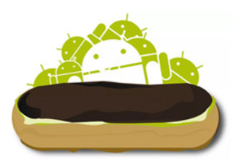
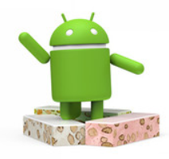
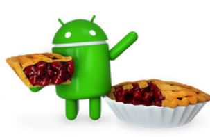
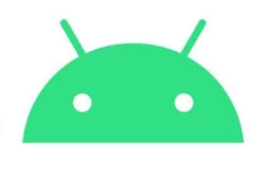
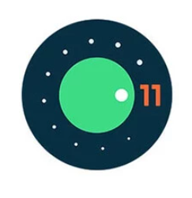
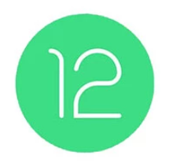
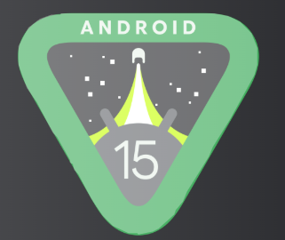
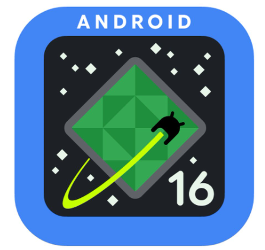

2009 - Android 2.0 Eclair
Lanzamiento: Octubre de 2009 Dispositivo icónico: Motorola Droid Desarrollado por: Google
Contexto histórico
En 2009, Android aún estaba compitiendo fuertemente contra: iPhone OS (Apple) BlackBerry OS Symbian Android 2.0 fue la versión que realmente comenzó a posicionarlo como un competidor serio frente al iPhone.
Arquitectura y Base Técnica
Android 2.0 seguía basado en: Kernel Linux 2.6, Máquina virtual Dalvik, Framework Java para desarrollo de apps, APIs ampliadas respecto a Donut, En esta versión se optimizó el manejo de memoria y procesos en segundo plano, permitiendo mejor multitarea comparado con versiones anteriores.
El verdadero comienzo comercial
Mejoras profundas
Google Maps Navigation gratis (GPS guiado). Soporte multitáctil. Sincronización múltiple de cuentas. Mejor navegador.
Seguridad
Privacidad reforzada
IA procesada en el dispositivo. Mayor control de permisos por app.
Mejoras técnicas
Optimización de batería. Mayor eficiencia en chips Apple Silicon. Mejor integración con ecosistema Mac y iPad.
Impacto: La mayor actualización desde iOS 7 en términos de funciones inteligentes.
2010 - Android 2.2 Froyo
Lanzamiento: Mayo 2010 (Google I/O) Dispositivo representativo: Nexus One Desarrollado por: Google
Contexto histórico
En 2010 Android todavía estaba creciendo y compitiendo contra: iOS BlackBerry OS Symbian Froyo fue una actualización CLAVE porque mejoró enormemente el rendimiento y convirtió a Android en una plataforma mucho más rápida y estable.
Cambios Técnicos Profundos
Introducción del Compilador JIT (Just-In-Time)
Este fue el cambio más importante. Antes de Froyo: Android usaba la máquina virtual Dalvik sin compilación JIT. Las apps se ejecutaban más lento. Con Froyo: Se introduce JIT. El código se compila en tiempo real. Aumento de rendimiento de 2x hasta 5x. Mejor ejecución de apps pesadas. Esto hizo que Android se sintiera mucho más fluido.
Mejor gestión de memoria
Mejor manejo del Garbage Collector. Menos cierres forzados. Mejor estabilidad en multitarea. Mejor control de procesos en segundo plano.
Navegador y Web
Mejoras importantes en el navegador
Motor JavaScript más rápido (V8). Mejor soporte HTML5. Soporte Adobe Flash 10.1. Mayor velocidad de carga. Mejor zoom multitáctil. En ese momento, el soporte Flash era una ventaja importante frente al iPhone.
2010 - Android 2.3 Gingerbread
Lanzamiento: Diciembre 2010 Dispositivo icónico: Google Nexus S Desarrollado por: Google Basado en: Kernel Linux 2.6.35
Contexto histórico
En 2010-2011 el mercado estaba dominado por: iOS BlackBerry OS Symbian Gingerbread fue una versión crucial porque: Se volvió extremadamente estable. Fue adoptada masivamente por fabricantes. Duró varios años activa en el mercado. Impulsó la expansión global de Android.
Cambios en Diseño e Interfaz
Nueva identidad visual
Interfaz más oscura (negros y verdes). Diseño más limpio y moderno. Botones e iconos rediseñados. Teclado virtual mejorado con mayor precisión. Mejor animación en transiciones. Se optimizó el uso de colores oscuros para ahorrar batería en pantallas AMOLED.
Mejoras Técnicas Importantes
Optimización de rendimiento
Mejor gestión de memoria. Reducción de procesos en segundo plano innecesarios. Mejor administración del Garbage Collector. Mayor fluidez que Froyo. Gingerbread era más estable y menos propenso a cierres forzados.
Impacto en el mercado
Gingerbread fue una de las versiones más utilizadas en la historia de Android. Dominó el mercado entre 2011 y 2013. Fue instalada en millones de dispositivos. Consolidó a Android como líder mundial. Muchos teléfonos populares lo usaron, como: Samsung Galaxy S II HTC Desire S
2011 - Android 3.0 Honeycomb
Lanzamiento: Febrero 2011 Dispositivo representativo: Motorola Xoom Desarrollado por: Google Diseñado exclusivamente para tablets
Contexto histórico
En 2010-2011 las tablets estaban creciendo rápidamente gracias al éxito del: iPad iOS Android tenía versiones para teléfonos (como Gingerbread), pero no estaba optimizado para pantallas grandes. Honeycomb fue creado específicamente para competir en el mercado de tablets.
Diseño e Interfaz (Holographic UI)
“Holographic Interface”
Características: Colores azul eléctrico. Fondos oscuros. Diseño futurista. Botones virtuales en pantalla (atrás, home, multitarea). Barra del sistema en la parte inferior. Barra de acción superior (Action Bar). Fue la primera vez que Android eliminó botones físicos en favor de botones virtuales.
Diseño Adaptado a Tablets
Fragmentos (Fragments)
Permitían dividir la pantalla en varias secciones. Ideal para pantallas grandes. Permitía mostrar lista y detalle al mismo tiempo. Base del diseño adaptable moderno.
Multitarea mejorada
Vista previa visual de apps recientes. Mejor cambio entre aplicaciones. Mejor gestión de procesos en segundo plano.
Importancia Histórica
Honeycomb fue: La base del Android moderno para pantallas grandes. Después de Honeycomb, Google unificó todo con: Android 4.0 Ice Cream Sandwich

2011 - Android 4.0 Ice Cream Sandwich
Lanzamiento: Octubre 2011 Dispositivo de estreno: Samsung Galaxy Nexus Desarrollado por: Google Kernel base: Linux 3.0
Contexto histórico
Antes de esta versión, Android estaba dividido en: Teléfonos → Gingerbread Tablets → Honeycomb Ice Cream Sandwich (ICS) fue la versión que unificó tablets y teléfonos en un solo sistema. Fue una de las versiones más importantes en la historia de Android.
Diseño - Evolución del Holo UI
Cambios visuales importantes
Interfaz “Holo” más limpia y moderna. Uso de tipografía Roboto (más legible). Colores azul eléctrico característicos. Animaciones más suaves. Transiciones mejoradas. Roboto fue diseñada específicamente para pantallas de alta resolución.
Eliminación de Botones Físicos
Uno de los cambios más revolucionarios: Botones de navegación ahora eran virtuales (en pantalla). Atrás, Inicio y Multitarea. Interfaz adaptable a diferentes tamaños. Esto permitió diseños más minimalistas en smartphones.
Cambios Técnicos Clave
Mejor rendimiento gráfico
Aceleración por hardware mejorada. Renderizado más fluido. Animaciones a 60fps más estables.
Desbloqueo facial (Face Unlock)
Primera implementación de reconocimiento facial en Android. Usaba la cámara frontal.

2012-2013 - Android 4.1-4.3 Jelly Bean
Jelly Bean fue una de las versiones más importantes de Android porque se enfocó en algo que los usuarios pedían mucho: mayor fluidez y rendimiento real del sistema. Introdujo mejoras profundas en animaciones, velocidad de respuesta y experiencia visual. Incluye tres versiones principales: Android 4.1 (2012) Android 4.2 (2012) Android 4.3 (2013)
Project Butter - El gran cambio de rendimiento
¿Qué hacía?
Aumentó la velocidad de animaciones a 60 fps (cuadros por segundo). Mejoró la respuesta táctil. Sincronizó el procesador, GPU y pantalla para evitar retrasos. Introdujo triple buffering para hacer transiciones más suaves. Resultado: El sistema se sentía mucho más fluido y rápido comparado con Ice Cream Sandwich.
Notificaciones Expandibles e Interactivas
Expandir notificaciones con dos dedos. Responder directamente desde la notificación. Ver imágenes y más contenido sin abrir la app. Acciones rápidas (como devolver una llamada o responder mensaje). Esta función se convirtió en base del Android moderno.
Google Now - El asistente inteligente
Jelly Bean introdujo Google Now, el precursor del actual Asistente de Google. Google Now ofrecía: Información automática según ubicación. Clima. Tráfico. Resultados deportivos. Recordatorios inteligentes.
2013 - Android 4.4 KitKat
Android KitKat fue una versión clave porque logró algo muy importante: hacer que Android funcionara bien incluso en dispositivos de gama baja, sin perder fluidez. Fue presentado en octubre de 2013 junto con el Nexus 5 y marcó un gran avance en optimización del sistema.
Project Svelte - Optimización para dispositivos modestos
¿Qué hizo?
Redujo el consumo de memoria RAM. Permitió que Android funcionara bien con solo 512 MB de RAM. Optimizó servicios en segundo plano. Mejoró la gestión de procesos. Esto permitió que millones de teléfonos económicos pudieran usar Android 4.4 sin volverse lentos.
Cambio importante en la interfaz
Cambios visuales:
Barra de estado y navegación transparentes. Diseño más limpio y claro. Iconos blancos en la barra superior. Modo inmersivo (oculta barra de navegación en pantalla completa). El modo inmersivo fue muy útil para: Juegos Lectura Video KitKat hizo que Android se viera más moderno y minimalista.
Nueva aplicación de Teléfono
KitKat integró mejor las llamadas con información inteligente. Identificación automática de números desconocidos (usando Google). Integración con Google Contacts.
“Ok Google” desde la pantalla principal
En el launcher del Nexus 5, por primera vez se podía activar el asistente diciendo: “Ok Google” Fue el inicio del uso masivo del asistente por voz en Android.
2014-2015 - Android 5.0 Lollipop
Lollipop fue una de las actualizaciones más grandes en la historia de Android. No solo cambió el diseño, sino también el funcionamiento interno del sistema. Fue lanzado en noviembre de 2014 junto con el Nexus 6 y la Nexus 9. Incluye: Android 5.0 Android 5.1 y 5.1.1
Material Design - El gran cambio visual
Lollipop introdujo el famoso Material Design, una nueva filosofía de diseño creada por Google. Características principales: Colores más vivos y planos. Animaciones fluidas. Efectos de profundidad (sombras y capas). Transiciones más naturales entre pantallas. Botones circulares flotantes (FAB). Fue el mayor rediseño desde Android 4.0. Material Design también unificó el diseño entre: Android Chrome Web Apps de Google
ART se convierte en el motor oficial
Apps más rápidas. Mejor rendimiento. Menor consumo de batería. Mejor administración de memoria. ART usa compilación anticipada (AOT), lo que mejora la velocidad de ejecución. En Lollipop, ART reemplazó oficialmente a Dalvik.
Project Volta - Mejor gestión de batería
Modo Ahorro de batería. Mejor análisis del consumo energético. APIs para que desarrolladores optimicen consumo. Battery Historian (herramienta para análisis técnico). Resultado: mejor duración en muchos dispositivos.
2015-2017 - Android 6.0 Marshmallow
Marshmallow fue una actualización importante que introdujo nuevas funcionalidades de seguridad y privacidad. Fue lanzado en octubre de 2015 junto con el Nexus 6P. Fue una versión enfocada en refinar y estabilizar Android.
Nuevo sistema de permisos (cambio histórico)
Marshmallow introdujo un nuevo sistema de permisos que permitía a los usuarios conceder o denegar permisos a aplicaciones individualmente. Esto permitió mayor control sobre la privacidad del usuario. Los permisos se agrupaban en categorías como: Contactos Almacenamiento Cámara Localización etc.
Doze Mode - Revolución en batería
Cuando el teléfono está: Quieto Con pantalla apagada Sin uso activo El sistema: Reduce actividad en segundo plano. Suspende sincronizaciones innecesarias. Limita acceso a red. Resultado: Aumento considerable de duración de batería en reposo.
App Standby
Complemento de Doze: Si no usas una app por mucho tiempo, el sistema limita su actividad. Reduce consumo energético innecesario.
Android Pay
Marshmallow impulsó pagos móviles mediante NFC. Soporte oficial para: Pagos sin contacto. Mejor integración de seguridad con huella digital. Fue el inicio formal del ecosistema de pagos móviles en Android.

2016-2018 - Android 7.0 Nougat
Nougat fue una actualización importante que introdujo nuevas funcionalidades de seguridad y privacidad. Fue lanzado en octubre de 2016 junto con el Nexus 6P. Fue una versión enfocada en refinar y estabilizar Android. Nougat se centró en productividad, multitarea, rendimiento gráfico y seguridad, marcando una evolución más madura del sistema. Incluye: Android 7.0 Android 7.1 / 7.1.1 / 7.1.2
Multiventana (Multi-Window) - Gran avance en productividad
Una de las funciones más esperadas: Permite usar dos aplicaciones al mismo tiempo. Pantalla dividida ajustable. Funciona tanto en vertical como en horizontal. Compatible con apps adaptadas. Fue un gran paso hacia el uso profesional del teléfono.
Notificaciones mejoradas
Nougat refinó el sistema: Respuesta directa desde notificación. Agrupación automática por aplicación. Diseño más compacto. Acciones rápidas más visibles. El sistema de notificaciones se volvió más organizado.
Mejor rendimiento y gráficos
Nougat mejoró considerablemente el rendimiento: Mejor administración de memoria. Optimización del sistema en segundo plano. Reducción del consumo energético. Mejor rendimiento en juegos.
Mejoras en conectividad
Soporte mejorado para LTE. Soporte para Wi-Fi Direct mejorado. Mejor Bluetooth. Soporte para Data Saver (ahorro de datos móviles).
2017-2019 - Android 8.0 Oreo
Lanzado oficialmente en agosto de 2017, Oreo fue presentado junto con el Google Pixel 2. Incluye dos versiones principales: Android 8.0 Android 8.1 Oreo se enfocó en velocidad, seguridad, optimización del sistema y mejor experiencia multitarea.
Mayor velocidad y rendimiento
Google optimizó profundamente el sistema: Arranque hasta 2 veces más rápido (en dispositivos Pixel). Reducción de procesos en segundo plano. Mejor administración de memoria. Apps más rápidas y estables. Oreo fue una versión muy refinada y estable.
Picture-in-Picture (PiP)
Una de las funciones más importantes: Permite ver videos en una ventana flotante mientras usas otra app. Ejemplos: Ver YouTube mientras respondes mensajes. Videollamadas en segundo plano. Esto mejoró mucho la multitarea.
Canales de notificación (gran cambio)
Oreo revolucionó el sistema de notificaciones: Las apps pueden crear “canales”. El usuario puede controlar cada tipo de notificación. Silenciar solo ciertas categorías. Personalizar vibración y sonido. Más control y menos spam.
Android Go (8.1)
Android 8.1 introdujo oficialmente Android Go Edition: Versión ligera para dispositivos con 1 GB de RAM. Apps optimizadas (YouTube Go, Gmail Go, etc.). Ideal para mercados emergentes.

2018-2020 - Android 9 Pie
Lanzado oficialmente en agosto de 2018, Android Pie marcó un cambio importante al introducir inteligencia artificial integrada en el sistema, nuevas formas de navegación y mejoras profundas en batería y bienestar digital. Fue presentado primero en el Google Pixel 3 y en dispositivos Pixel anteriores mediante actualización.
Inteligencia Artificial integrada
Pie fue la primera versión donde Google integró Machine Learning directamente en el sistema operativo. Adaptive Battery Aprende qué apps usas más. Limita recursos a apps que casi no usas. Mejora duración de batería significativamente. Adaptive Brightness Aprende tus hábitos de brillo. Ajusta automáticamente según tus preferencias. Android empezó a “aprender” del usuario.
Nuevo sistema de navegación por gestos
Pie introdujo navegación gestual híbrida: Botón Home tipo “pastilla”. Deslizar hacia arriba para multitarea. Deslizar lateral para cambiar entre apps. Eliminación del botón de multitarea tradicional. Fue el inicio del sistema completamente gestual que veríamos después.
Mejoras en batería
Además de Adaptive Battery: Optimización más agresiva de procesos en segundo plano. Mejor administración de red. Apps limitadas automáticamente si consumen demasiado.
Bienestar Digital (Digital Wellbeing)
Una función completamente nueva enfocada en salud digital: Tiempo de uso por app.

2019 - Android 10 Quince Tart
En 2019, Google decidió eliminar oficialmente los nombres de postres para el público, así que “Quince Tart” fue solo el nombre interno. Comercialmente se llamó simplemente Android 10. Fue lanzado oficialmente en septiembre de 2019 y debutó en dispositivos como el Google Pixel 4 (aunque los Pixel anteriores lo recibieron primero vía actualización).
Modo Oscuro Nativo (Dark Mode completo)
Una de las funciones más esperadas: Tema oscuro en todo el sistema. Compatible con apps compatibles. Reduce fatiga visual. Puede ahorrar batería en pantallas OLED. Fue la primera vez que Android ofreció un modo oscuro integral a nivel sistema.
Navegación totalmente gestual
Android 10 eliminó oficialmente los botones clásicos: Deslizar desde abajo → Inicio. Deslizar y mantener → Multitarea. Deslizar desde los lados → Atrás. Esto hizo la experiencia más moderna y parecida a otros sistemas gestuales.
Gran avance en privacidad
Android 10 reforzó enormemente la privacidad: Permisos de ubicación más controlados: Permitir siempre. Permitir solo mientras se usa la app. Denegar. Restricciones adicionales: Acceso limitado a identificadores del dispositivo. Mayor control sobre actividad en segundo plano. Fue una versión muy enfocada en proteger datos personales.
Mejoró drásticamente privacidad Preparó Android para 5G y plegables Modernizó la navegación

2020 - Android 11 Red Velvet Cake
Lanzado oficialmente en septiembre de 2020, Red Velvet Cake fue el nombre interno de desarrollo de Android 11. Fue presentado primero en los dispositivos Pixel, como el Google Pixel 5. Esta versión se centró principalmente en comunicación, privacidad, control de dispositivos inteligentes y optimización del sistema.
Conversaciones prioritarias
Android 11 reorganizó las notificaciones: Nueva sección especial llamada “Conversaciones”. Chats de apps como WhatsApp o Messenger aparecen separados. Se pueden marcar como prioritarios. Permite que aparezcan siempre arriba. Android empezó a dar prioridad a la comunicación.
Burbujas de chat (Chat Bubbles)
Android 11 introdujo las burbujas de chat: Permite abrir chats en ventanas flotantes. Se pueden mover y redimensionar. Mejora la productividad al tener múltiples chats abiertos.
Permisos de un solo uso (gran avance en privacidad)
Android 11 introdujo permisos de un solo uso: Permisos que se otorgan solo por un tiempo limitado. Se pueden rechazar temporalmente. Mejora el control sobre datos personales.
Mejoras en rendimiento y juegos
Mejor soporte para pantallas de 90Hz y 120Hz. Mejor administración de memoria. Mejor rendimiento gráfico. Optimización para dispositivos 5G.

2021 - Android 12 Snow Cone
Lanzado oficialmente en octubre de 2021, Snow Cone fue el nombre interno de desarrollo de Android 12. Debutó junto con el Google Pixel 6 y el Google Pixel 6 Pro. Android 12 representó el mayor rediseño visual desde Lollipop, además de mejoras importantes en privacidad y rendimiento.
Material You - Rediseño total
Android 12 introdujo Material You, un nuevo sistema de diseño: Personalización de temas y colores. Ajuste automático de colores según el fondo. Mejora la experiencia visual y la coherencia del sistema.
Colores dinámicos (Monet Engine)
Sistema inteligente que: Analiza tu fondo de pantalla. Genera una paleta personalizada. Aplica esos colores a todo el sistema. Esto hizo cada teléfono más personal y único.
Gran salto en privacidad
Android 12 fortaleció la protección de datos: Indicadores de cámara y micrófono Punto verde visible cuando una app usa cámara o micrófono. Panel de privacidad Muestra qué apps accedieron a: Cámara Micrófono Ubicación Contactos Ubicación aproximada Permite compartir ubicación aproximada en vez de exacta.
Mejor rendimiento interno
Android 12 mejoró: Reducción del uso de CPU del sistema. Mejor eficiencia energética. Animaciones más suaves. Mejor gestión de memoria. Google reportó mejoras en consumo energético del sistema base.
2022 - Android 13 Tiramisu
Lanzado oficialmente en agosto de 2022, Android 13 continuó el camino iniciado por Android 12, pero con un enfoque más fuerte en privacidad, personalización avanzada y optimización del sistema. Debutó en dispositivos como el Google Pixel 7 y el Google Pixel 7 Pro.
Material You más personalizable
Android 13 amplió el sistema de colores dinámicos: Más combinaciones de paletas. Colores aplicables también a apps de terceros compatibles. Mayor coherencia visual. Mejor integración con widgets. El sistema se volvió aún más personal.
Nuevo permiso para notificaciones (gran cambio)
Antes: Las apps podían enviar notificaciones automáticamente. Con Android 13: Las apps deben pedir permiso para enviar notificaciones. El usuario puede aceptar o rechazar. Fue un avance importante en control y privacidad.
Idioma por aplicación
Una función muy útil: Puedes asignar idioma diferente a cada app. No depende del idioma general del sistema. Ideal para usuarios bilingües.
Mejoras en tablets y pantallas grandes
Android 13 mejoró: Barra de tareas inferior. Multiventana más estable. Mejor experiencia en dispositivos plegables. Esto fue importante para dispositivos tipo tablet y foldables.
Dio más control sobre notificaciones Mejoró privacidad multimedia Expandió personalización Material You Fortaleció experiencia en tablets Mejoró audio y conectividad
2023 - Android 14 Upside Down Cake
Lanzado oficialmente en octubre de 2023, Android 14 continuó el enfoque moderno de Android: más personalización, mayor seguridad, mejor eficiencia energética y mejor soporte para pantallas grandes. Debutó junto con el Google Pixel 8 y el Google Pixel 8 Pro.
Personalización más avanzada
Android 14 amplió Material You: Más opciones de colores dinámicos. Nuevos estilos de pantalla de bloqueo. Más personalización de reloj en lockscreen. Atajos personalizables en pantalla de bloqueo. Mayor libertad visual sin apps externas.
Seguridad y privacidad reforzadas
Android 14 fortaleció bastante la protección del sistema: Restricción de apps antiguas Bloquea instalación de apps muy antiguas (target SDK viejo). Reduce riesgos de malware. Ubicación más segura Mayor claridad cuando una app comparte datos de ubicación con terceros. Acceso a fotos mejorado Permite seleccionar fotos específicas. No acceso total a galería por defecto.
Mejor eficiencia energética
Optimización de procesos en segundo plano. Mejor gestión de batería en apps poco usadas. Mejor rendimiento en dispositivos con altas tasas de refresco. Mayor eficiencia del sistema base. Android 14 sigue refinando lo iniciado con Doze y Adaptive Battery.
Mejor escalado de texto
Soporte para tamaños de fuente hasta 200%. Escalado inteligente (no rompe el diseño). Mejor accesibilidad para personas con visión reducida.

2024 - Android 15 vanilla Ice Cream
Lanzado oficialmente en 2024, Vanilla Ice Cream continúa la evolución moderna de Android enfocándose en: Más privacidad Mejor experiencia en pantallas grandes Optimización de rendimiento Mejor integración con IA y servicios inteligentes Debutó en dispositivos como el Google Pixel 9 (según región y disponibilidad).
Privacidad aún más estricta
Android 15 reforzó varias áreas clave: Acceso parcial a archivos Más control al compartir fotos y videos. Permisos temporales más precisos. Mayor transparencia Mejor información sobre cómo las apps usan datos sensibles. Mejor monitoreo de acceso a sensores. Android continúa fortaleciendo el modelo iniciado en Android 10-13.
Mejor experiencia en tablets y plegables
Android 15 fortaleció bastante la experiencia en pantallas grandes: Mejor soporte para interfaces de escritorio. Mayor compatibilidad con teclados externos. Más opciones de personalización en pantallas plegables. Optimización de UI para pantallas más grandes.
Optimización de rendimiento
Mejor administración de CPU y memoria. Menor consumo energético en segundo plano. Mejor eficiencia en dispositivos de alta tasa de refresco (120Hz+). Reducción de calentamiento en tareas intensivas.
Mejoras en batería
Optimización más inteligente de apps inactivas. Mejor administración de procesos en segundo plano. Ajustes más precisos para ahorro energético. Sigue evolucionando el sistema de Adaptive Battery.

2025 - Android 16 Bajlava
Android 16, cuyo nombre interno es Baklava, representa una de las actualizaciones más enfocadas en inteligencia artificial, personalización avanzada, optimización energética y mejoras para pantallas grandes y dispositivos plegables. Google continúa con su estrategia de integrar más funciones inteligentes directamente en el sistema.
Información General
Presentación preliminar: Google I/O 2025 Desarrollado por: Google Enfoque principal: IA integrada, productividad y optimización del sistema Basado en Linux Kernel actualizado (6.x) Diseñado para teléfonos, tablets, plegables, Chromebooks y dispositivos IoT
Inteligencia Artificial integrada en el sistema
Android 16 da un salto fuerte en IA gracias a la evolución de Gemini Nano, el modelo de IA que funciona directamente en el dispositivo. Funciones destacadas: Resúmenes automáticos de notificaciones largas. Respuestas inteligentes mejoradas en mensajes y correos. Edición de fotos con IA integrada en el sistema. Transcripción y resumen automático de llamadas (según región). Búsqueda contextual avanzada dentro del teléfono (tipo “búsqueda universal”). La IA ahora funciona más offline, lo que mejora privacidad y velocidad.
Material You 3.0 - Personalización evolucionada
Android 16 mejora el sistema de diseño dinámico: Más opciones de paletas de color. Temas adaptativos más profundos. Widgets más interactivos. Pantalla de bloqueo personalizable con más estilos. Transiciones más fluidas y naturales.